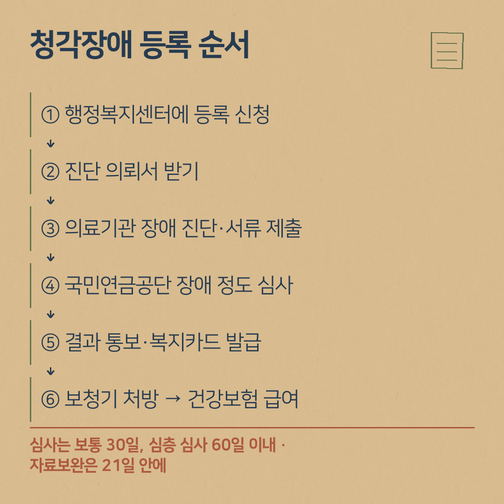

청각장애 등록, 어떤 순서로 하나요? 신청부터 복지카드, 보청기 지원까지
- 신청은 주소지 읍·면·동 행정복지센터에서 합니다. 본인 신청이 원칙이고, 18세 미만이거나 거동이 어려우면 보호자가 대신할 수 있습니다.
- 의료기관에서 장애 진단을 받아 진단서와 검사 자료를 제출하면, 국민연금공단이 장애 정도를 심사합니다(보통 접수 후 30일, 심층 심사는 60일 이내).
- 심사 결과는 행정복지센터를 거쳐 통보되고, 등록되면 장애인등록증(복지카드)을 받습니다.
- 등록 뒤 이비인후과 전문의 처방을 받아 공단 등록 업소에서 구입하면 건강보험 보청기 급여를 받을 수 있습니다.
"진해에서 청각장애 등록을 하고 보청기 지원을 받으려면 어떻게 해야 하나요?" 상담실에서 자주 받는 질문입니다. 보청기 건강보험 급여는 청각장애로 등록된 분이 대상이라서, 등록이 첫 단계입니다. 공식 자료에 나온 순서대로 정리했습니다.
진해에서 청각장애 등록하고 보청기 지원받으려면, 순서가 어떻게 되나요?
- ① 주소지 읍·면·동 행정복지센터에서 장애인 등록 상담·신청
- ② 장애 정도 심사용 진단 의뢰서 받기 (발급 여부와 순서는 행정복지센터 안내를 따르세요)
- ③ 의료기관에서 장애 진단 → 진단서·검사 자료 제출
- ④ 국민연금공단 장애 정도 심사
- ⑤ 결과 통보 → 장애인 등록 → 장애인등록증(복지카드) 발급
- ⑥ 이비인후과 전문의 보청기 처방 → 공단 등록 업소 구입 → 건강보험 급여
이 순서는 국가법령정보센터에 올라온 「장애인 등록 및 서비스 신청서」 서식의 처리 절차와 국민연금공단 안내를 바탕으로 했습니다.

청각장애 등록하려면 어디부터 가야 하나요? 누가 신청하나요?
- 신청 장소: 주소지 읍·면·동 행정복지센터
- 신청인: 본인이 원칙입니다. 18세 미만이거나 거동이 어려운 경우 등은 보호자가 대신 신청할 수 있습니다.
- 외국인·재외동포는 체류 자격에 따라 등록 가능 여부가 다르니, 행정복지센터에 먼저 확인하세요.
진단은 어떻게 받나요?
청각장애 진단은 이비인후과 전문의가 있는 의료기관에서 받습니다(국민연금공단 「장애진단 의료기관 및 전문의」 안내 참고). 청각장애를 판정하는 기준과 검사 방법은 보건복지부 「장애정도판정기준」 고시에 정해져 있습니다. 검사 종류와 횟수, 검사 간격은 진단하는 의료기관의 안내를 따르세요.
행정복지센터에 낼 때는 장애진단서와 함께 검사 결과지·진료기록 같은 관련 자료를 같이 내야 합니다. 빠지면 자료보완 요청을 받을 수 있습니다.
국민연금공단 장애 정도 심사는 얼마나 걸리나요?
- 국민연금공단 안내: 행정복지센터의 심사 의뢰를 공단 지사가 접수한 날부터 보통 30일, 심층 심사는 60일 이내에 결과를 통보합니다(1회에 한해 30일 이내 연장 가능).
- 자료보완을 통보받으면 21일 이내(공휴일 제외)에 제출해야 합니다. 늦어지면 심사가 지연되거나 반려될 수 있습니다. 정당한 사유가 있으면 최대 60일까지 제출 기한을 늘릴 수 있고, 두 차례 보완 요구에도 제출하지 않으면 반려될 수 있습니다.
- 서류만으로 판정이 어려우면 공단 자문의사가 직접 진단(직접진단)할 수 있습니다. 자료보완·직접진단 기간은 심사 기간에 들어가지 않습니다.
- 진행 상태는 국민연금공단 홈페이지에서 조회하거나, 고객센터 1355·관할 지사에 문의할 수 있습니다.
청각장애 등록을 안 하면 보청기 지원을 못 받나요?
국민건강보험 보청기 급여(장애인보조기기 급여)는 장애인복지법에 따라 등록된 청각장애인이 대상입니다. 등록 전이라면 먼저 등록 절차를 확인하세요. 소음성 난청 산재처럼 다른 제도로 지원받는 경우는 소음성 난청 산재 보청기를 보세요.
등록이 끝나면 보청기 지원은 어떻게 받나요?
등록 뒤에는 이비인후과 전문의에게 보청기 처방을 받고, 처방전 발행일로부터 6개월 안에 국민건강보험공단에 등록한 업소에서 구입합니다. 착용 1개월 뒤 검수를 받고 급여비를 청구합니다. 보청기 기준액은 131만 원(내구연한 5년)이고, 공단은 기준액과 실제 구입금액 중 낮은 금액의 90%를 지급합니다(차상위 본인부담경감 대상자 등은 100%). 내 경우의 정확한 금액은 국민건강보험공단(1577-1000)에 확인하세요. 의료급여 수급권자는 의료급여 기준을 따르니 행정복지센터에 확인하세요.
자세한 순서는 보청기 지원금 받는 순서 5단계, 날짜 계산은 처방전 6개월 기한에 정리했습니다.
상담 오실 때 챙기면 좋은 것
- 신분증, 장애인등록증(복지카드) — 등록이 끝났다면
- 보조기기 처방전 (발행일 확인)
- 청력검사 결과지
- 쓰시던 보청기가 있으면 함께
Q. 청각장애 등록 신청은 어디서 하나요?
A. 주소지 읍·면·동 행정복지센터에서 장애인 등록을 신청합니다. 본인 신청이 원칙이며, 18세 미만이거나 거동이 어려운 경우 등은 보호자가 대신할 수 있습니다.
Q. 장애 정도 심사는 얼마나 걸리나요?
A. 국민연금공단 안내에 따르면 공단 지사가 심사 의뢰를 접수한 날부터 보통 30일, 심층 심사는 60일 이내에 결과를 통보합니다. 자료보완(21일 이내 제출)이나 직접진단 기간은 심사 기간에 들어가지 않습니다.
Q. 등록하면 바로 보청기 지원을 받나요?
A. 등록 뒤 이비인후과 전문의 처방을 받아 처방전 발행일로부터 6개월 안에 국민건강보험공단 등록 업소에서 구입하고, 착용 1개월 뒤 검수를 받아 청구하면 건강보험 보청기 급여를 받을 수 있습니다.
- 국가법령정보센터 「장애인 등록 및 서비스 신청서」(장애인복지법 시행규칙 별지 제1호의4서식, 처리 절차)
- 국민연금공단 「장애심사 자주 묻는 질문」(심사 기간·자료보완·직접진단)
- 보건복지부 「장애정도판정기준」 고시(제2023-42호)
- 국민건강보험공단 「보조기기별 지급기준 > 보청기」
- 국민건강보험공단 「장애인보조기기 급여제도 소개」(공단 부담금액)
제도는 바뀔 수 있습니다. 신청 전에 주소지 읍·면·동 행정복지센터, 국민연금공단(1355), 국민건강보험공단(1577-1000)에 한 번 더 확인해 주세요.
상담 예약
전화 010-6599-0109 또는 0507-1426-0116 (두 센터 공통)
진해센터 경남 창원시 진해구 진해대로 999, 하이존빌딩 1층 108호(자은동) · 하이존 상가 지하주차장
명지서비스센터 부산 강서구 명지국제6로 99, A동 1070호 · 대방디엠시티 상가주차장
운영시간: 평일 08:30–18:30, 토요일 08:30–13:00, 일요일 휴무 · 예약 후 방문해 주세요. 오시는 길 보기
네이버 블로그에서도 보기: 귀인보청기 블로그 · English version